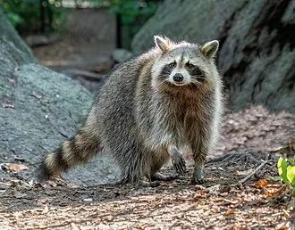

The raccoon, also spelled racoon[3] and sometimes called the common raccoon or northern raccoon to distinguish it from the other species, is a mammal native to North America. It is the largest of the procyonid family, having a body length of 40 to 70 cm (16 to 28 in), and a body weight of 5 to 26 kg (11 to 57 lb). Its grayish coat mostly consists of dense underfur, which insulates it against cold weather.
This is a bold text. This is an italic text. This is important information. This is emphasis text.The original habitats of the raccoon are deciduous and mixed forests, but due to their adaptability, they have extended their range to mountainous areas, coastal marshes, and urban areas, where some homeowners consider them to be pests. As a result of escapes and deliberate introductions in the mid-20th century, raccoons are now also distributed across central Europe, the Caucasus, and Japan.
In Europe, the raccoon has been included on the list of Invasive Alien Species of Union Concern since 2016.
BBC weather BBC sport iplayer https://www.bbc.co.uk/iplayer
